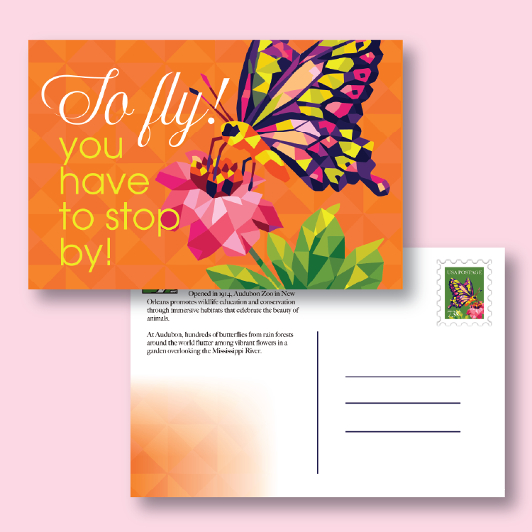
Audobon Zoo Postcard
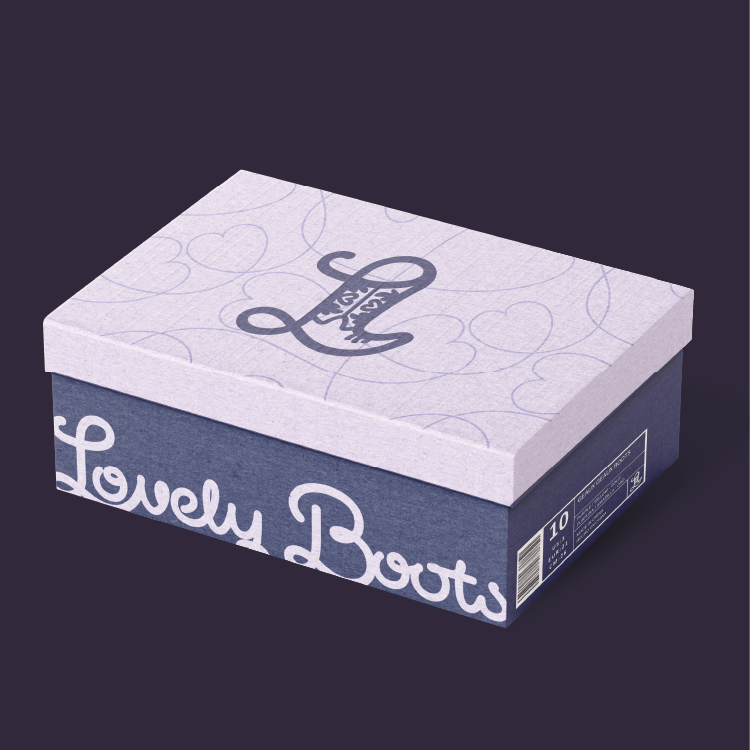
Shoe Company Branding
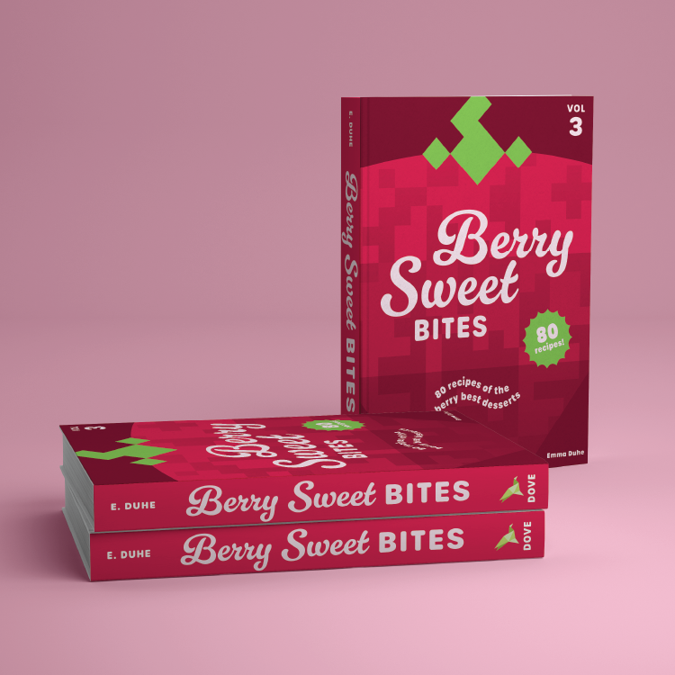
Recipe Book Cover
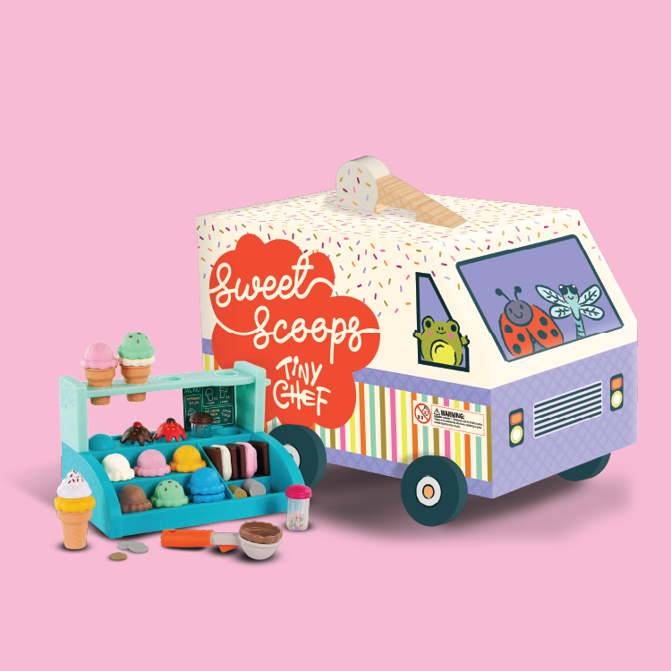
Tiny Chef Packaging
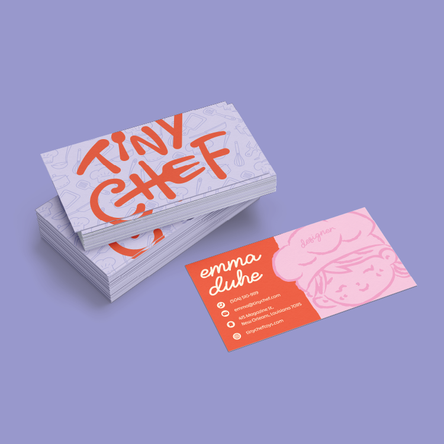
Tiny Chef Business Card
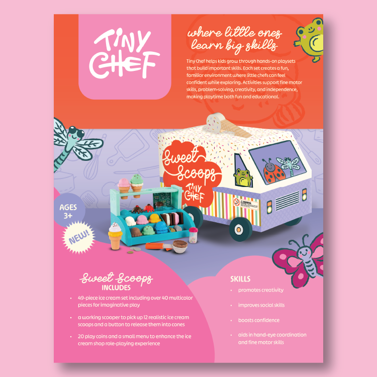
Tiny Chef Sales Sheet
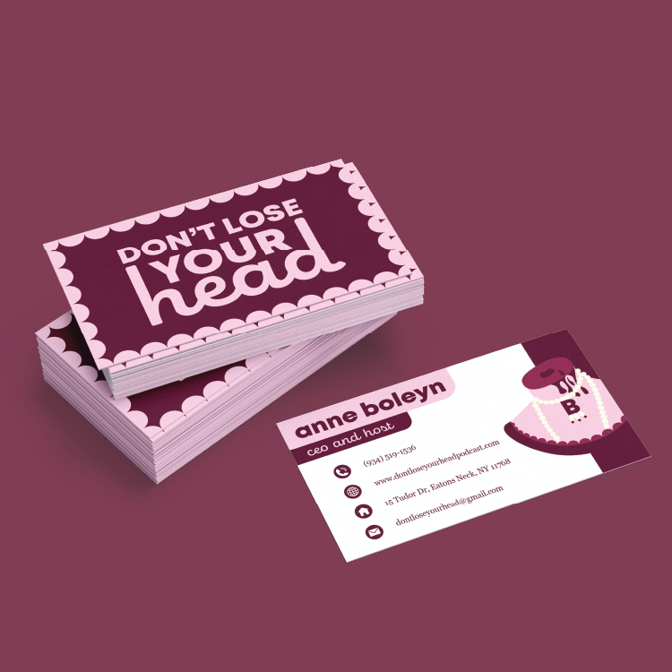
Anne Boleyn Business Card
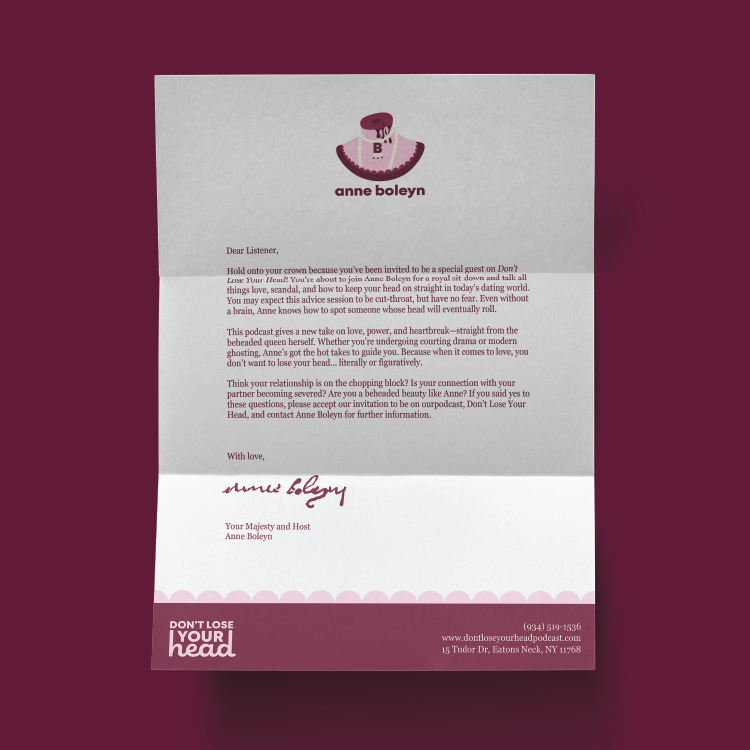
Anne Boleyn Letterhead
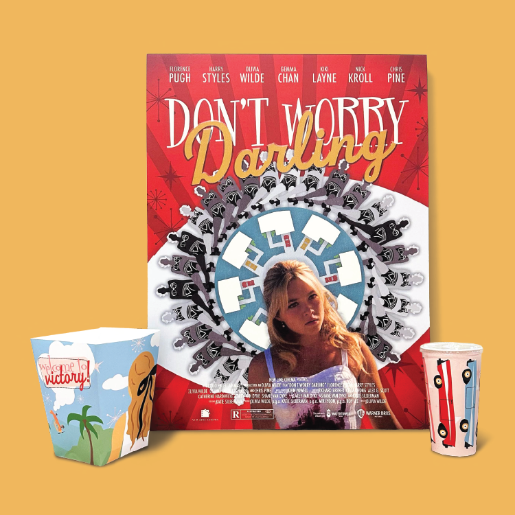
Movie Poster
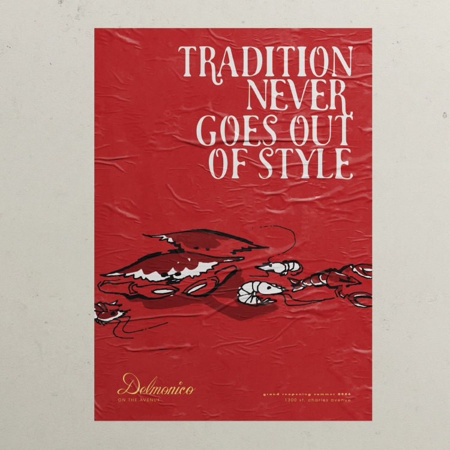
Restaurant Poster
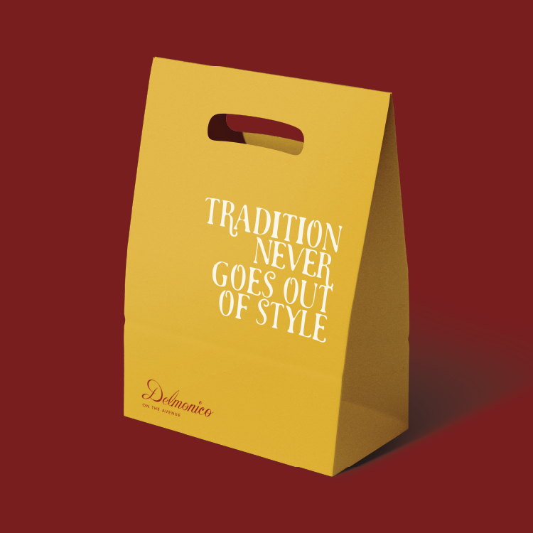
Restaurant Take-Out Bag
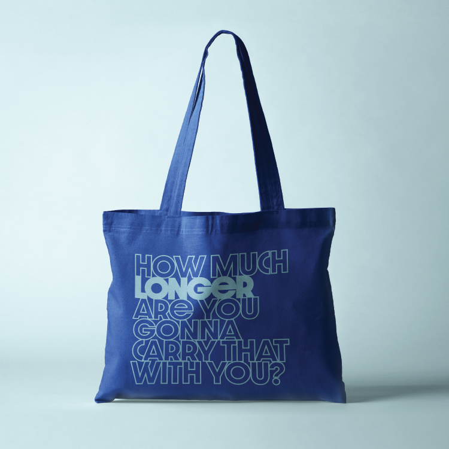
Tote Bag
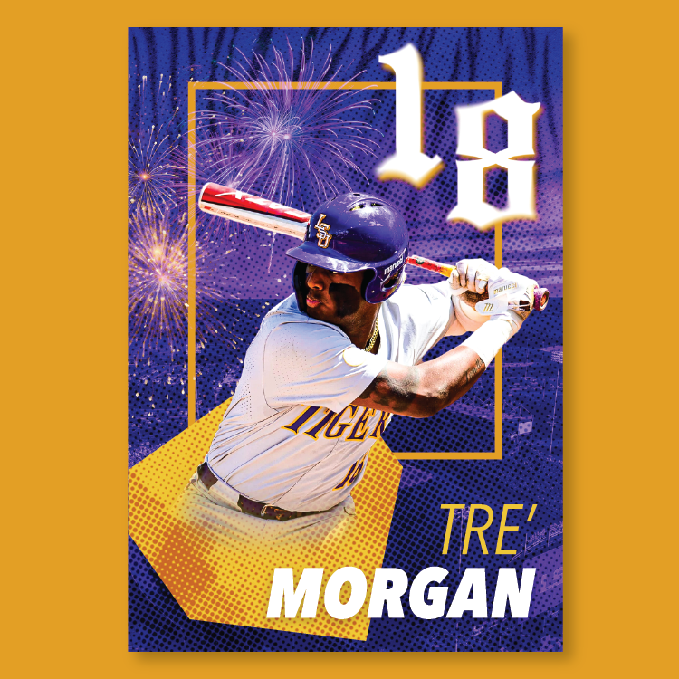
LSU Baseball Graphic
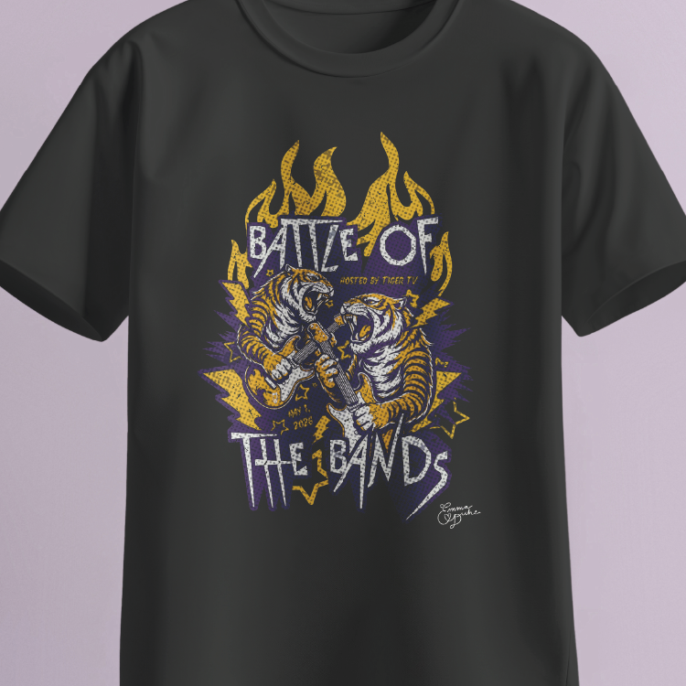
Battle of the Bands T-Shirt
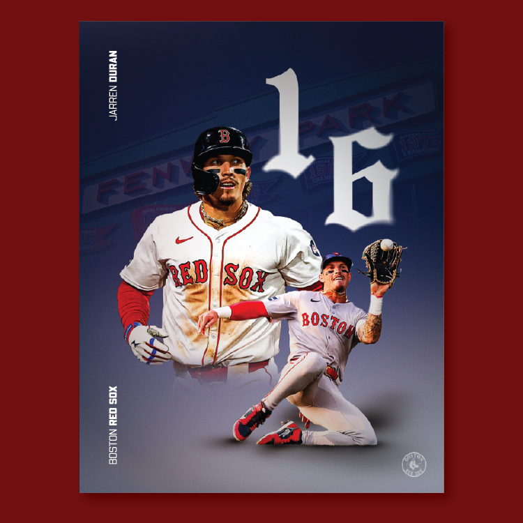
Red Sox Graphic
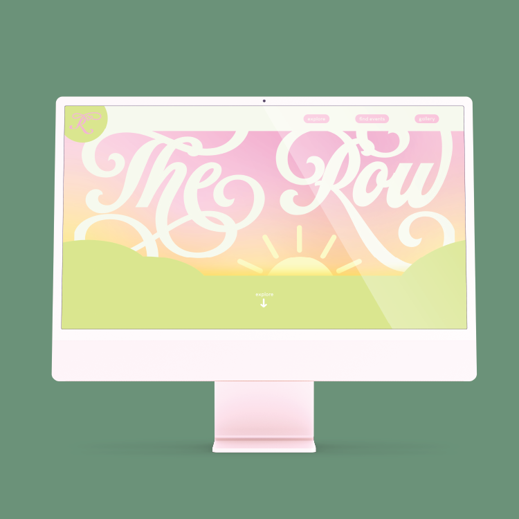
Digital Zine Homepage
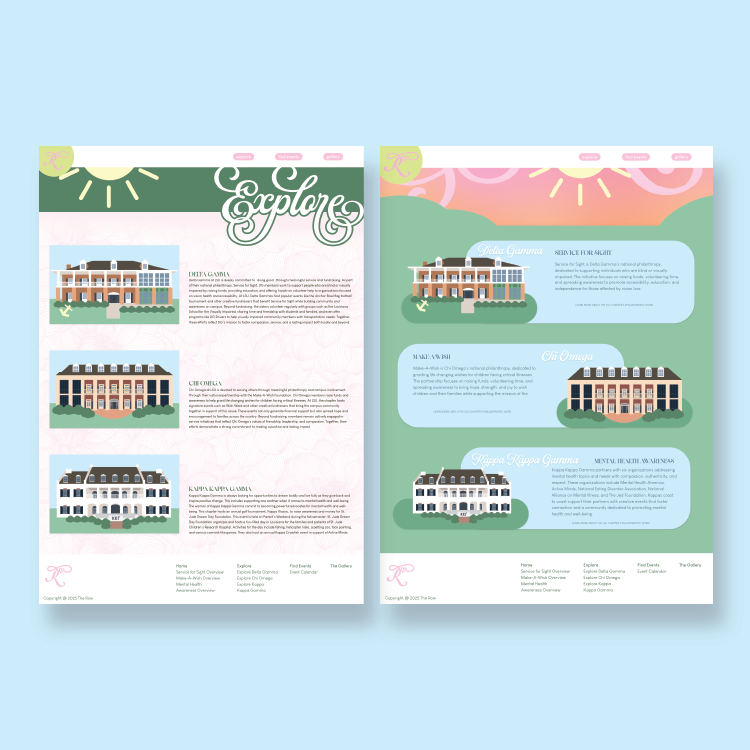
Digital Zine Explore Pages
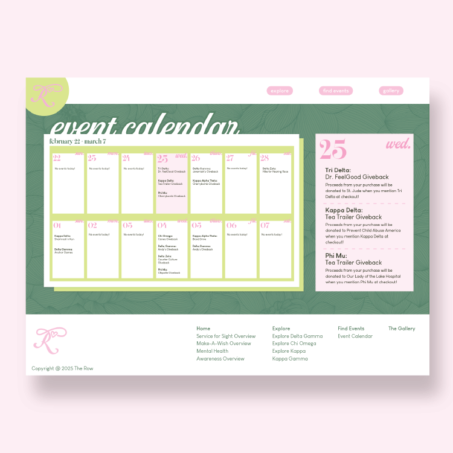
Digital Zine Calendar Page